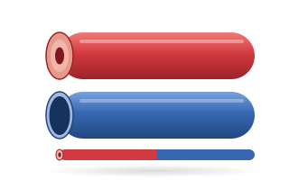

Key questionHow does the structure of each kind of blood vessel fit the job it does?
0% of this lesson done

Part 1
What I Need to Know
This lesson follows the blood out of the heart, through the vessels and back again. It also compares how animals and plants move fluids, as the General Biology 2 competency on transport and circulation asks (STEM_BIO11/12-IVa-h-1).
By the end of this lesson, you can:
define arteries, capillaries and veins, and relate the structure of each to its function;
describe how pressure, speed and total cross-sectional area change along the route of the blood;
predict how a change in the radius of a vessel changes resistance and flow;
explain how blood in the veins returns to the heart against gravity;
compare transport in animals with transport in plants.
How to work through the lesson
Session 3 (about one hour): Parts 1 to 4, then Readings 1 and 2 of Part 5.
Session 4 (about one hour): Readings 3 to 5, then Parts 6 to 9.
Answer every question before you move on, and select any word with a dotted underline to see what it means.
Your work is saved on this device as you go.
Part 2
What I Know
Answer these five questions before you study the lesson. You get one try each, and the lesson tells you where each idea is taught.
Question 1
A blood vessel is called an artery when it
Question 2
Which kind of vessel has a wall only one cell thick?
Question 3
Along the route of the blood, where does the pressure fall most steeply?
Question 4
If the radius of an arteriole is halved, its resistance to flow becomes about
Question 5
Which of these helps blood in the leg veins return to the heart?
Part 3
What’s In
A quick look back at Lesson 1.
In Lesson 1 you saw that each ventricle pumps about 70 mL of blood with every beat, about 5 L every minute at rest. The left ventricle pushes this blood into the and the right ventricle into the pulmonary trunk. You also saw that the left ventricle pushes much harder, because its blood has to reach every part of the body.
Five liters a minute is a lot of blood to move. In this lesson you will see the vessels that carry it: how they are built, how fast the blood moves in each one, and how it gets back to the heart.
Practice
Which vessel receives blood from the left ventricle?
Part 4
What’s New
Two things to notice, then two predictions.
When you prick your finger, blood oozes out slowly. When an artery is cut, blood spurts out in time with the heartbeat. Keep this difference in mind. By the end of the lesson you will be able to explain it.
Now try this on your own hand. Let your hand hang down for half a minute so the veins on the back of it fill up. Press one fingertip on a vein near your knuckles. With a second finger, stroke along the vein toward your wrist, then lift the second finger. The stretch of vein between your fingers stays empty until you lift the first finger. William Harvey used this test about 400 years ago. You will find out why it works in Reading 4.
Before you read, record what you think now. These two questions are not scored. You will answer them again in Part 7.
Your prediction
True or false: every artery in the body carries oxygen-rich blood.
Your prediction
Blood leaves the heart through one wide aorta and spreads into billions of narrow capillaries. Where does blood move slowest?
Part 5
What Is It
Five short readings. Readings 1 and 2 are for Session 3, and Readings 3 to 5 for Session 4.
Reading 1 of 5
Three kinds of vessels
Blood leaves the heart in , passes through in the tissues, and returns to the heart in . The names tell you which way the blood is going. An artery carries blood away from the heart, and a vein carries blood toward the heart. The names do not tell you whether the blood is rich or poor in oxygen.
From the left ventricle, blood enters the , which branches into smaller and smaller arteries. The smallest arteries are the , and each one feeds a . Capillaries join to form , venules join to form veins, and the largest veins, the two , return the blood to the right atrium (Betts et al., 2022, Section 20.1).
The walls of arteries and veins have three layers: a smooth inner lining, a middle layer of smooth muscle and elastic fibers, and an outer layer of tough connective tissue. An artery has a thick middle layer and a small, round opening. A vein has a thinner wall and a wide, often flattened opening, and many veins have valves. A capillary has no middle or outer layer at all: its wall is a single layer of thin cells.
Each design fits its job. Arteries receive blood in spurts at high pressure, so their elastic walls stretch with every beat and spring back between beats. This keeps the blood moving even while the heart relaxes, and you can feel the stretching as a . Capillaries let substances pass between the blood and the cells. Veins carry blood at low pressure and, because they are wide, they hold a reserve of blood: about 64 percent of all the blood in the body is in the systemic veins at any moment (Betts et al., 2022, Section 20.2).
An artery, a capillary and a vein cut across, drawn to show their walls. The capillary is drawn much larger than its real size. Based on Betts et al. (2022, Section 20.1).
Table 2.1. Structure and function of blood vessels (Betts et al., 2022, Sections 20.1 and 20.2)
Feature
Artery
Capillary
Vein
Direction of flow
away from the heart
from an arteriole to a venule
toward the heart
Wall
thick, with much elastic tissue and smooth muscle
one layer of cells
thinner, with less muscle and elastic tissue
Opening
small and round
very narrow
wide, often flattened
Blood pressure
high, with a pulse
low
lowest
Valves
none
none
present, mostly in the arms and legs
Main job
carry blood quickly under pressure and smooth out the spurts from the heart
exchange between the blood and the cells
return blood to the heart and hold a reserve of blood
Quick check
A pulmonary vein carries oxygen-rich blood. Why is it called a vein?
Reading 2 of 5
Slow where it matters
As blood travels from the aorta to the venae cavae, three things change: its pressure, its speed, and the of the vessels it is passing through. Total cross-sectional area means the openings of all the vessels of one kind added together.
Blood pressure falls all along the route, because friction with the vessel walls uses up the push that the heart gave it. It falls most steeply in the arterioles. They are narrow and muscular, so they give the most . By the time blood reaches the capillaries, the pulse has faded out, and in the large veins near the heart the pressure is close to zero (Betts et al., 2022, Section 20.2).
Speed behaves differently. The same volume of blood must pass through every level of the system each minute. One capillary is far narrower than the aorta, but there are billions of capillaries. Added together, their openings give a much larger area than the aorta. Blood that spreads into this large area slows down, from about 30 cm per second in the aorta to about 0.026 cm per second in the capillaries, the way a river slows where it widens into a lake (Clark et al., 2018, Section 40.4).
Slow flow is exactly what the capillaries need. Their walls are one cell thick, and blood moves through them slowly, so there is time for exchange. Oxygen and nutrients leave the blood by , and carbon dioxide and other wastes enter it. Not every capillary bed is open at once: at any moment only about 5 to 10 percent have blood flowing through them. Rings of muscle called open and close them as the tissue needs.
Some fluid also leaves the blood. At the arteriole end of a capillary, blood pressure pushes plasma out into the spaces around the cells. About 85 percent of it returns to the capillaries near the venule end. The other 15 percent is collected by lymph vessels as and returned to the blood near the heart (Clark et al., 2018, Section 40.4).
Pressure, speed and total cross-sectional area along the route of the blood. Select each kind of vessel. The values are typical for an adult at rest (Betts et al., 2022, Section 20.2; Clark et al., 2018, Section 40.4).
Try this
Select each kind of vessel in turn. Where does the pressure fall most steeply?
Compare with a model answer
In the arterioles. They give the greatest resistance, so the pressure drops most there.
Compare the speed graph with the area graph. What do you notice about their shapes?
Compare with a model answer
They are mirror images. Where the total area is largest, in the capillaries, the speed is lowest.
Explain why slow flow in the capillaries is useful.
Compare with a model answer
It gives time for oxygen, nutrients and wastes to pass between the blood and the cells.
Quick check
Blood moves at about 30 cm/s in the aorta but only about 0.026 cm/s in the capillaries. A classmate concludes that less blood passes through the capillaries each minute than through the aorta. Which response is best?
This is the end of Session 3. In Session 4, start with Reading 3.
Reading 3 of 5
Radius rules the flow
Blood flows from where the pressure is higher to where it is lower. How much blood flows depends on two things: the pressure difference between the two ends of a vessel, and the resistance of the vessel.
Flow = pressure difference ÷ resistance
Resistance comes mostly from friction between the blood and the vessel wall. Three things set it: the length of the vessel, the thickness of the blood, and the radius of the vessel. Length and thickness change only slowly. Radius can change in seconds. When the smooth muscle in the wall of an arteriole contracts, the vessel narrows, which is called . When the muscle relaxes, the vessel widens, which is called (Betts et al., 2022, Section 20.2).
Radius has a very strong effect, because resistance depends on the radius raised to the fourth power. If the radius is halved, the resistance becomes 2 × 2 × 2 × 2 = 16 times larger, and the flow falls to one-sixteenth. Small changes in radius therefore make large changes in flow.
The body uses this all the time. When you exercise, the arterioles in your working muscles widen, and much more blood flows to them. On a cold day, the arterioles in your skin narrow, so less warm blood flows near the surface and less heat is lost. This is why fingers can look pale in the cold.
Flow through a vessel. Change its radius and the pressure difference, and compare the flow with normal.
Try this
Keep the pressure difference at 100%. Reduce the radius to 50%. How many times greater is the resistance? What is the flow now?
Compare with a model answer
The resistance is 16 times greater, and the flow falls to about 6% of normal.
Return the radius to 100%. Raise the pressure difference to 150%. Which has the stronger effect on flow: a 50% change in pressure or a 50% change in radius?
Compare with a model answer
A 50% change in pressure changes the flow by 50%. A 50% change in radius changes it far more, because the radius is raised to the fourth power.
Find the radius that gives about double the normal flow.
Compare with a model answer
About 119%, because 1.19 × 1.19 × 1.19 × 1.19 is about 2.
Quick check
On a cold day, arterioles in the skin narrow to about 80 percent of their usual radius. If the pressure difference stays the same, about how much blood flows through them?
Reading 4 of 5
Getting blood back to the heart
By the time blood reaches the veins, its pressure is very low. In a person who is standing, the blood in the leg veins must also rise more than a meter against gravity to reach the heart. Because the veins hold most of the blood in the body, anything that helps them empty toward the heart matters a lot (Betts et al., 2022, Section 20.2).
Three things help. First, many veins, especially in the arms and legs, have one-way valves. Their flaps open when blood flows toward the heart and are pushed shut when blood starts to slip back. This is what you saw on the back of your hand: blood could not flow backward into the emptied stretch of vein.
Second, there is the . Leg veins run between the muscles. When the muscles contract, they squeeze the veins and push blood upward, past the valve above. When the muscles relax, the valve below stays shut, and the vein refills from below.
Third, there is the . When you breathe in, the diaphragm contracts and moves down. The pressure in the chest falls while the pressure in the abdomen rises, so blood is pushed from the veins of the abdomen into the veins of the chest. When you breathe out, the pressure in the chest rises and pushes blood on toward the heart, and valves stop it from flowing back (Betts et al., 2022, Section 20.2).
When these helpers fail, blood pools. If a person stands still for a long time, the leg muscles do not squeeze the veins, so blood collects in the legs and fluid leaks out into the tissues, and the ankles swell. If the valves are damaged, the veins stretch and bulge. These are called varicose veins.
Venous return. Contract and relax the leg muscles, or breathe in and out, and watch the blood and the valves.
Try this
Contract and relax the muscles several times. Which valve is open in each state?
Compare with a model answer
When the muscles contract, the upper valve is open and the lower valve is shut. When they relax, the upper valve is shut and the lower valve is open, so the vein refills from below.
Switch the valves to “damaged”. What happens to the blood when the muscles relax?
Compare with a model answer
It slips back down, so the blood does not move up overall and it pools in the lower part of the vein.
Why can the ankles swell when a person stands still for a long time?
Compare with a model answer
Without the muscle pump, blood pools in the leg veins, the pressure in the capillaries there rises, and more fluid leaks out into the tissues.
Quick check
In varicose veins, the valves in the leg veins no longer close fully. What would you expect when the person stands still for a long time?
Reading 5 of 5
Moving fluids without a heart: transport in plants
Plants also move fluids over long distances, from the roots to the topmost leaves of a tall tree, but they have no heart and no blood. They have two kinds of transport tubes: , which carries water and dissolved minerals, and , which carries sugars (Clark et al., 2018, Section 30.5).
Water in the xylem is pulled, not pushed. Water evaporates from tiny pores in the leaves. Water molecules cling to one another, so the evaporation pulls a continuous column of water up from the roots. The energy for this comes from the sun, which drives the evaporation, so the plant spends none of its own. Xylem flow goes one way only: from the roots up to the leaves.
Sap in the phloem is pushed. Leaves make sugar and load it into the phloem tubes. Water follows the sugar into the tubes by osmosis, and the pressure that builds up pushes the sap along to wherever sugar is being used or stored, such as roots, fruits and growing tips. Phloem can carry sap up or down.
So plants and animals solve the same problem in different ways. Both move fluid in bulk through specialized tubes, from where the pressure is higher to where it is lower. Only animals use a muscular pump, and only animals send their transport fluid around a closed loop back to where it started.
Table 2.2. Long-distance transport in a human and in a flowering plant (Clark et al., 2018, Sections 30.5 and 40.1)
Feature
Human
Flowering plant
Transport fluid
blood
xylem sap (water and minerals) and phloem sap (sugars)
Tubes
arteries, capillaries and veins
xylem vessels and phloem sieve tubes
What drives the flow
pressure from a muscular pump, the heart
xylem: evaporation from the leaves pulls water up; phloem: sugar loading builds pressure that pushes sap along
Path
a closed loop: blood returns to the heart
xylem: one way, roots to leaves; phloem: from where sugar is made or stored to where it is used
Shared principle
fluid moves in bulk from higher to lower pressure through tubes specialized for transport
the same
Quick check
Which statement correctly compares transport in a mango tree and in a human?
Part 6
What’s More
Sort the vessel features, check two common ideas, and try two practice questions.
Artery, capillary or vein?
Decide whether each statement describes an artery, a capillary or a vein. Then check your answers.
Check these ideas
Decide whether you agree with each idea, then see what science says.
Arteries and veins are defined by the direction of flow. The pulmonary arteries carry oxygen-poor blood away from the heart, and the pulmonary veins carry oxygen-rich blood toward it. Oxygen-poor blood is not dirty. It simply carries less oxygen and more carbon dioxide. This idea has been recorded among learners (Özgür, 2013).
Common idea
“Blood moves fastest in the capillaries, because they are the narrowest vessels.”
What do you think?
What science says
Blood moves slowest in the capillaries. What matters is the total area of all the capillaries together, which is far larger than the area of the aorta (Clark et al., 2018, Section 40.4). Water speeds up in a narrowed hose because there is only one hose. Blood slows down in the capillaries because one vessel has divided into billions.
Practice
Practice 1
Why can you feel a pulse in the artery at your wrist but not in the veins on the back of your hand?
Practice 2
During a basketball game, the arterioles in a player’s leg muscles widen. If the pressure stays about the same, what happens to blood flow to those muscles?
Part 7
What I Have Learned
A summary of the lesson, and a second look at your predictions.
Key ideas
Arteries carry blood away from the heart and veins carry blood toward it, whatever the oxygen content of the blood.
Arteries have thick, elastic walls. Capillaries have walls one cell thick. Veins have thinner walls, wide openings and valves.
Pressure falls all along the route. It falls most steeply in the arterioles.
Blood moves slowest in the capillaries, because their total cross-sectional area is the largest. Slow flow gives time for exchange.
Flow = pressure difference ÷ resistance. Resistance depends on the radius to the fourth power, so a small change in radius gives a large change in flow.
Valves, the skeletal muscle pump and breathing return venous blood to the heart.
Animals and plants both move fluid in bulk through tubes from higher to lower pressure. Only animals use a muscular pump and a closed loop.
Think again
Here are your two predictions from Part 4. Answer them again now.
Think again
True or false: every artery in the body carries oxygen-rich blood.
Think again
Blood leaves the heart through one wide aorta and spreads into billions of narrow capillaries. Where does blood move slowest?
Part 8
What I Can Do
Use the lesson to help someone you know.
Advice for someone who stands all day
Many workers stand for most of the day: market vendors, security guards, cashiers, traffic enforcers. By evening, their feet and ankles are often swollen.
Write a short message to one such worker. In your own words, (1) explain why their ankles swell, using what you learned about veins and valves, and (2) give two simple things they can do during the day that help blood return to the heart, with the reason each one works.
Part 9
Assessment
Ten questions on the whole lesson. You get one try each, then you see the answer and why.
Question 1
The pulmonary artery carries oxygen-poor blood. Why is it still called an artery?
Question 2
Why does exchange of oxygen and nutrients happen in the capillaries and not in the arteries?
Question 3
Which vessels give the greatest resistance to blood flow?
Question 4
An arteriole widens to twice its radius while the pressure difference stays the same. About how much does the flow through it change?
Question 5
A soldier standing at attention for a long time may feel faint. Which helper of venous return is missing?
Question 6
In which vessel does blood move fastest?
Question 7
At rest, where is most of the blood in the body?
Question 8
Blood leaves the heart in spurts, yet it keeps moving through the arteries between beats. Which feature of arteries explains this?
Question 9
What drives water up the xylem of a tall tree?
Question 10
Some of the plasma that leaves the capillaries is not taken back into them. What happens to it?
Your score
Answer the ten questions above to see your score.
Check yourself
Rate how well you can do each target now. If you choose “Partly” or “Not yet”, the module points you to the reading to review.
I can define arteries and veins by the direction of blood flow.
Next: Lesson 3 puts the heart and the vessels together into two circuits.
Answer key
Lesson 2: Blood Vessels and Blood Flow
Item
Answer
What I Know 1
B. carries blood away from the heart
What I Know 2
C. Capillary
What I Know 3
B. In the arterioles
What I Know 4
D. 16 times as large
What I Know 5
B. One-way valves and the squeezing of leg muscles
Practice (What’s In)
B. The aorta
Quick check, Reading 1
A. It carries blood toward the heart.
Quick check, Reading 2
B. She is wrong. The same volume passes each minute, but it is spread across a far larger total area, so it moves slowly.
Quick check, Reading 3
B. About 40 percent of before
Quick check, Reading 4
B. Blood tends to pool in the leg veins, because nothing stops it from slipping back down.
Quick check, Reading 5
B. Both move fluid in bulk through specialized tubes, driven by pressure differences.
Artery, capillary or vein?
Has a thick wall with elastic fibers and smooth muscle: Artery; Has a wall only one cell thick: Capillary; Has one-way valves along its length: Vein; Carries blood away from the heart: Artery; Is where oxygen and nutrients leave the blood: Capillary; Carries blood toward the heart at low pressure: Vein; Has a pulse that you can feel at the wrist: Artery; Has the slowest blood flow: Capillary; Has a wide opening and holds much of the body’s blood at rest: Vein
Practice 1
B. The pressure in arteries rises and falls with each heartbeat, but by the time blood reaches the veins the spurts have been smoothed out.
Practice 2
B. It increases a lot, because resistance falls sharply when the radius grows.
Think again: True or false: every artery in the body carries oxygen-rich blood.
B. False
Think again: Blood leaves the heart through one wide aorta and spreads into…
C. In the capillaries
Assessment 1
A. It carries blood away from the heart.
Assessment 2
B. Capillary walls are one cell thick and blood moves slowly through them.
Assessment 3
B. The arterioles
Assessment 4
C. It becomes 16 times larger.
Assessment 5
B. The skeletal muscle pump, because his leg muscles are not contracting
Assessment 6
A. Aorta
Assessment 7
D. In the systemic veins
Assessment 8
B. Elastic walls that stretch during systole and recoil during diastole
Assessment 9
B. Evaporation of water from the leaves, which pulls the water column up
Assessment 10
B. It is collected by lymph vessels and returned to the blood.